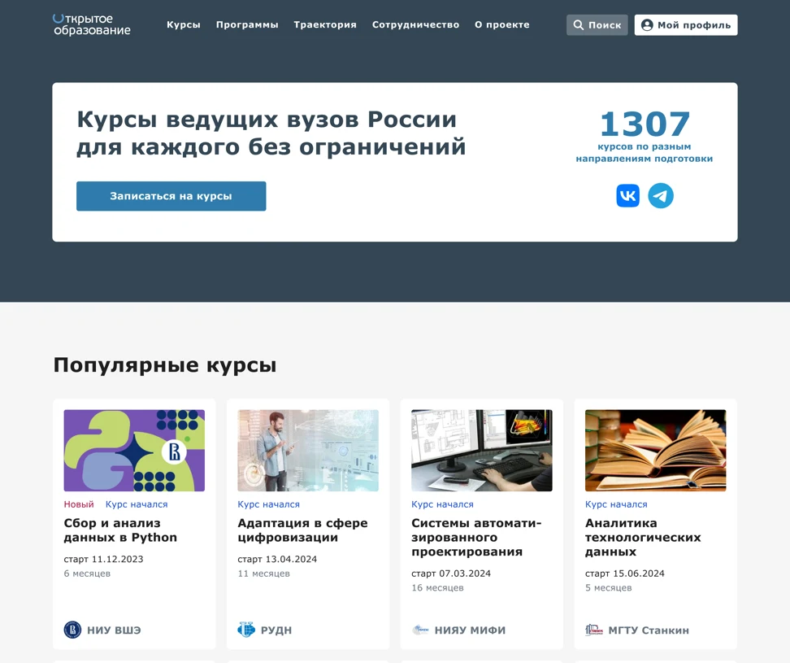
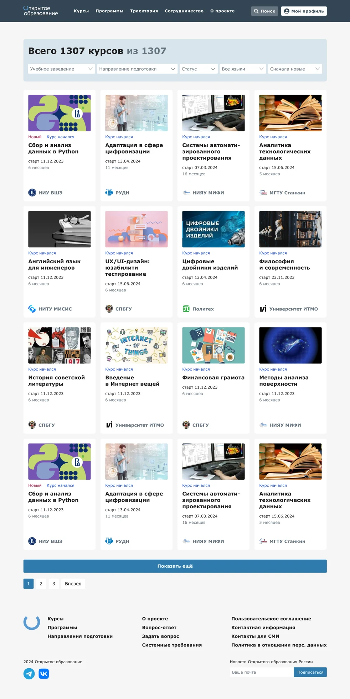
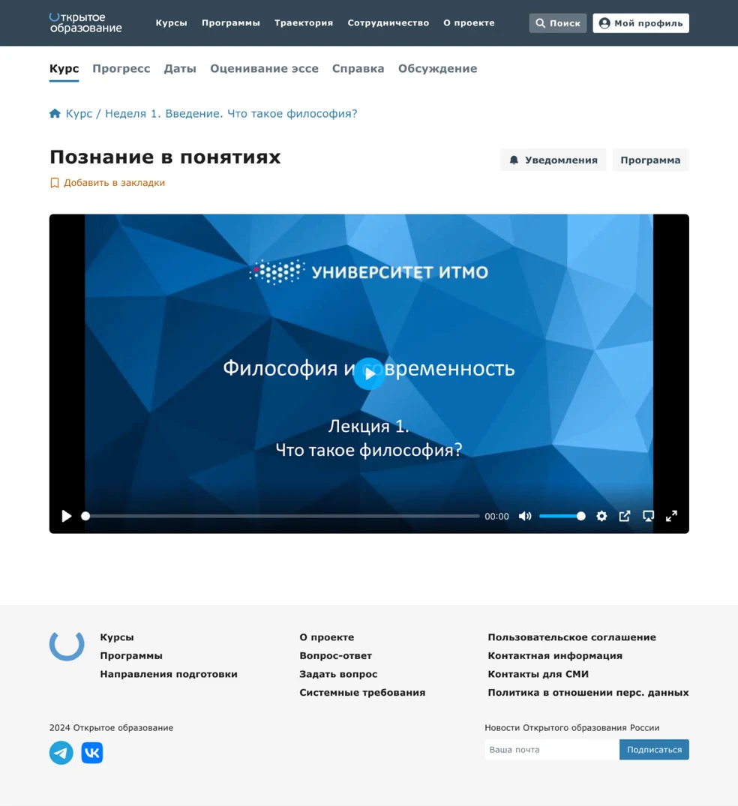

Доступность онлайн-обучения
Исследовала барьеры для слабовидящих пользователей, спроектировала улучшенный интерфейс и проверила его в трёх сериях пользовательских тестов

Доступный интерфейс оказался удобнее для всех, а не только для слабовидящих
- Вклад
- Аудит платформ: экспертно, автоматически и с ассистивными технологиями
- Прототип с новым контрастом, типографикой и навигацией
- Три серии тестов: 20, 30 и 6 участников
- Результат
- Время 174 → 68 с, ошибки 22% → 3%, удовлетворённость 55 → 87,5
- Статья в журнале «Культура и технологии» и доклад на XIV Конгрессе молодых учёных Университета ИТМО
- Благодарственное письмо «Открытого образования»
От аудита к прототипу
Проверила интерфейсы образовательных платформ экспертно, автоматизированными инструментами и с помощью ассистивных технологий. На «Открытом образовании» выявила проблемы с контрастом, навигацией и совместимостью со вспомогательными инструментами.
В прототипе усилила контраст, пересмотрела типографику и иконки, упростила навигацию и переработала карточки курсов




Как проверяла
- 20 участников без нарушений зрения прошли пилотное тестирование
- 30 участников без нарушений зрения в основном эксперименте выполняли одинаковые задания на исходном или улучшенном интерфейсе
- 6 слабовидящих участников прошли тестирование доступности. В последующих интервью я уточнила, насколько легко было ориентироваться и пользоваться вспомогательными инструментами.
Результаты
- Время, медиана
- 174 → 68 с
- Доля ошибок
- 22% → 3%
- Удовлетворённость
- 55 → 87,5
Сравнение исходного и улучшенного прототипов в основном эксперименте. По итогам работы я сформулировала рекомендации для проектирования доступных образовательных платформ. Ассоциация «Национальная платформа открытого образования» отметила работу в благодарственном письме от 22 мая 2025 года.
Публикация и доклад
Результаты легли в основу магистерской ВКР и статьи в журнале «Культура и технологии», которую мы подготовили с научным руководителем Алёной Джумагуловой. Я представила исследование на XIV Конгрессе молодых учёных Университета ИТМО.